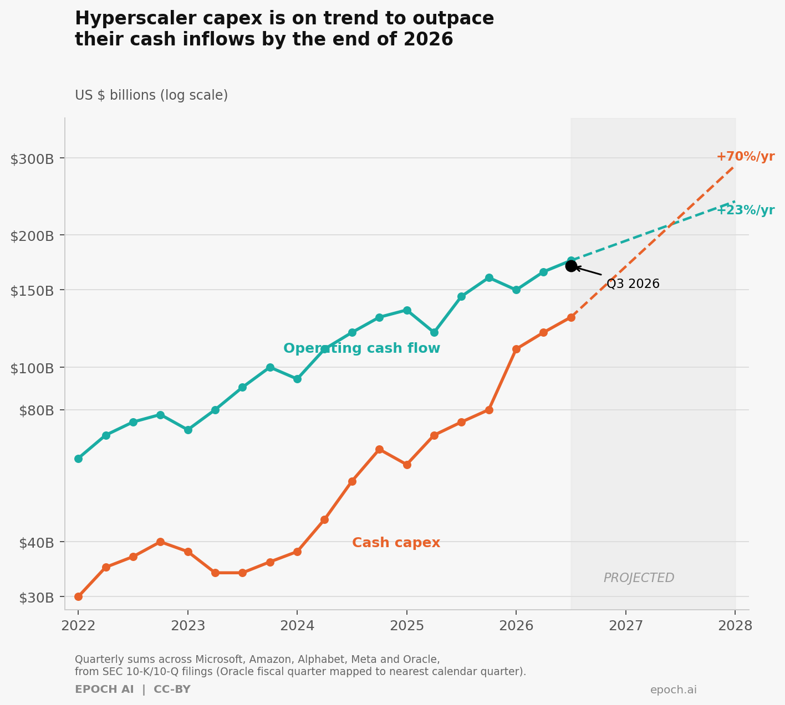

capex가 cash flow를 추월하는 순간, 진짜 질문이 시작된다. Hyperscaler 5개사 합산 AI capex가 영업현금흐름을 사상 처음 추월하는 2026년 — $600B 청구서가 정당화되려면 향후 6~8분기 inference 매출 가속이 전부다.
Epoch AI의 차트가 보여주는 교차점 — 주황(capex)이 청록(영업현금흐름)을 뚫고 올라가는 그 순간 — 은 단순한 재무 이벤트가 아니다. AI 인프라 베팅이 실제 수요로 정당화될 수 있는가, 그 판가름이 시작되는 출발선이다.

Hyperscaler capex vs. Operating Cash Flow 2022–2028 | Source: Epoch AI (epoch.ai) · CC-BY
① 자본의 무게 — 시장이 믿는 숫자들
Microsoft, Amazon, Alphabet, Meta, Oracle. 다섯 하이퍼스케일러의 합산 capex는 2023년 Q2 이후 연평균 72% 성장하고 있다. 시장은 이것을 보고 말한다: "감당할 수 있다, 이 회사들의 대차대조표는 다르다."
숫자는 다른 이야기를 한다.
- 2025년 합산 capex 실적치: 약 $450B → 2026년 가이던스 합산 $600B+
(Microsoft $85~90B / Alphabet $75~80B / Amazon $200B / Meta $115~135B) - 합산 capex 성장 속도 +70%/yr vs. 영업현금흐름 성장 속도 +23%/yr — 격차가 벌어지는 중
- 서버 감가상각 useful life 3~4년 → 6년 연장으로 업계 전체 약 $18B 비용 인식 유예
- Amazon Q1 2026 단 한 분기 capex: $43.2B → trailing 12-month FCF: $26B → $1.2B (-95% YoY)
- 하이퍼스케일러 2025년 신규 채권 발행: 약 $121B — 사상 처음 순부채(net debt) 진입 기업 등장
회계의 쿠션: 비용을 미래로 밀기
흥미로운 역설이 있다. Amazon은 2025년 Q1, 일부 서버의 useful life를 오히려 6년에서 5년으로 단축했다. 이유: "AI/ML 기술 발전 속도가 너무 빠르다." 6년짜리 장부에서 GPU가 18개월마다 세대 교체된다면, 어딘가 계산이 맞지 않는다.
② 이면의 균열 — 수요는 실제로 어디 있는가
이건 내 해석이지, 공식 전망이 아니다.
Sequoia의 David Cahn이 이 공식을 처음 쓴 건 2023년 9월이었다.
Nvidia data center revenue run-rate × 2 (GPU는 전체 TCO의 절반) × 2 (cloud 운영사의 필요 gross margin) = 업계가 연간 벌어야 할 AI 수익
— Sequoia Capital, David Cahn2023년 9월: "$200B 질문" → 2024년 6월: "$600B 질문" → 2026년 현재: "$1T 질문"
공개된 가장 구체적인 수치는 하나뿐이다. Microsoft Azure AI annual run-rate $40B+ (Satya Nadella, 2026년 4월 실적 발표). 24개월 전 $10B에서 4배 — 이것은 사실이다, Microsoft가 직접 공시했다.
나머지는 불투명하다. Alphabet은 Vertex AI 사용량이 YoY 25배 늘었다고 했지만 AI revenue 라인은 별도 공시하지 않는다. AWS도 마찬가지 — "Not separately disclosed." 애널리스트 추정치를 사실처럼 인용하는 리포트를 경계할 것.
- Microsoft → OpenAI $13B 투자 / OpenAI compute 비용 ~$15B/yr는 Azure로 귀환
- Amazon → Anthropic $8B 투자 / compute는 AWS로
- Google → Anthropic $3B 투자 / compute는 GCP로
- 수익의 재순환인가, 진정한 end-user 수요인가 — 아직 구분이 쉽지 않다
- Microsoft 365 상업용 seat 4억 개 중 Copilot paid seats: 1,000만 → 침투율 약 3~5%
③ Skin in the Game — 내가 본 사이클
2000년대 초, 통신사들의 광케이블 오버빌드를 나는 JP모건 홍콩에서 직접 목격했고, 투자했고, 실패도 했다. Capital markets 딜이 쏟아졌다 — 수요가 오면 된다는 믿음으로. 수요는 결국 왔다. 하지만 WorldCom은 그 전에 파산했고, 투자자들은 십 년을 기다렸다.
구조적 맞음(structural correctness)과 재무적 지속가능성(financial sustainability)은 언제나 다른 문제다. 나는 30년간 두 개가 따로 노는 것을 충분히 봤다.
④ 진화의 흉터 — 그럼에도 왜 계속 보는가
반론은 무시할 수 없다. 수요가 실제로 가속하고 있다는 신호들:
- Google Q1 2026 — 분당 160억 토큰 처리, QoQ +60%. Training이 아니라 inference다
- Agentic AI 워크로드 채택 YoY 340% 증가
- Azure AI $10B → $40B in 24 months. 이 CAGR 2년 유지 시 2028년 $160B
- Google Cloud backlog: Q4 2025 $240B → Q1 2026 $460B (Google 직접 발표)
- Amazon·Google 모두 "compute-constrained" — 팔 수 있는 것보다 주문이 많다고 공언
모델이 싸질수록 사용량이 폭발하는 Jevons paradox가 실제로 작동 중일 수 있다. 세 가지 시나리오(Bear/Base/Bull) 모두 향후 6~8분기를 공통으로 지목한다. Inference 매출이 이 기간 동안 가속하느냐, 아니면 Copilot·Gemini·Bedrock이 여전히 파일럿 단계에 머무느냐 — 그것이 지금의 $600B+ capex가 '선투자'였는지 '오버빌드'였는지를 가른다.
광케이블의 흉터는 결국 오늘의 인터넷이 됐다.
다음 분기 Azure AI·AWS AI·Google Cloud AI의 revenue 궤적이다. $600B짜리 청구서의 정당성은 그 곡선이 써줄 것이다 — 아직 우리가 아니다.
표면을 읽는 사람에게는 — capex 버블 경보.
구조를 읽는 사람에게는 — 가장 중요한 6~8분기의 시작점.
참고 자료
- Epoch AI — Hyperscaler capex has quadrupled since GPT-4's release (Feb 2026)
- Sequoia Capital — AI's $600B Question, David Cahn (Jun 2024)
- Value Add VC — Microsoft vs Google: Who's Winning the AI Cloud War in 2026 (Jun 2026)
- MindStudio — Google Cloud vs AWS vs Azure Q1 2026 (May 2026)
- Amazon FCF Collapse Q1 2026 (Yahoo Finance)
- CNBC — GPU Depreciation: How Long Before a GPU Depreciates? (Nov 2025)
- GlobeNewsWire — Cloud AI Inference Workload Forecast (May 2026)